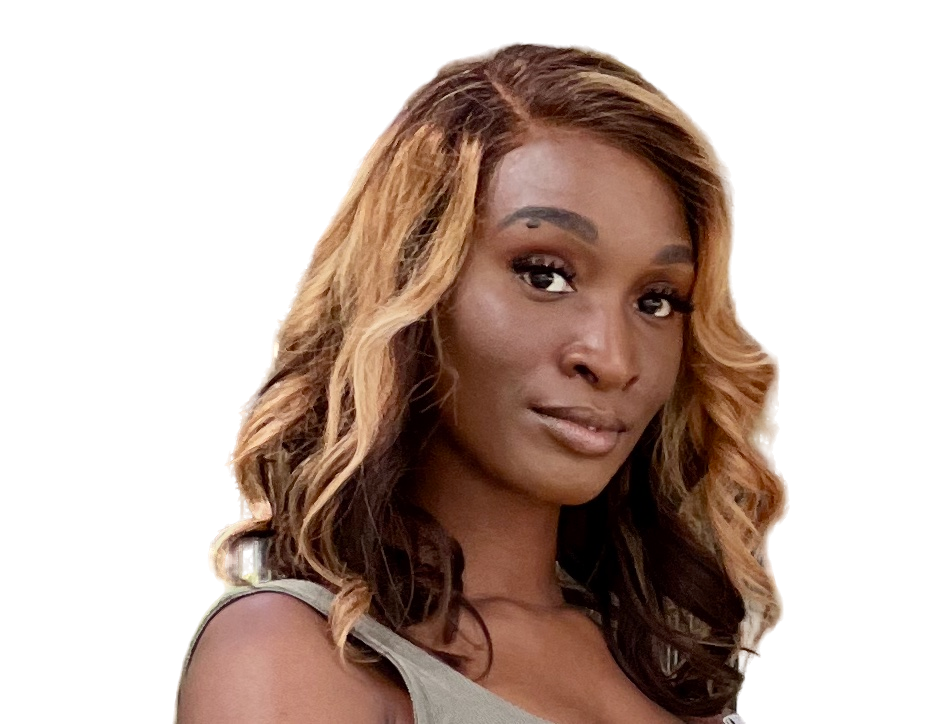

I specialize in strategy. I 🫶🏿 karaoke and started a podcast about self development.
My Skills.
Product Design & Development
I started learning product design in 2019 because I wanted to be on the bleeding edge of new technology. Over time, I have gained experience designing and developing mobile and web applications.
Laser Tag Champ
My best skill is strategic thinking. I practice strategy through tactical laser tag. This allows me to improve through moment-to-moment crisis management and critical thinking skills.